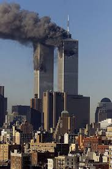

It is claimed that the collapse of the Twin Towers and 7 World Trade Center were the result of controlled demolitions rather than structural failure due to impact and fire. Some claim the US government was complicit - that officials deliberately let the attacks happen or were even involved in the planning.